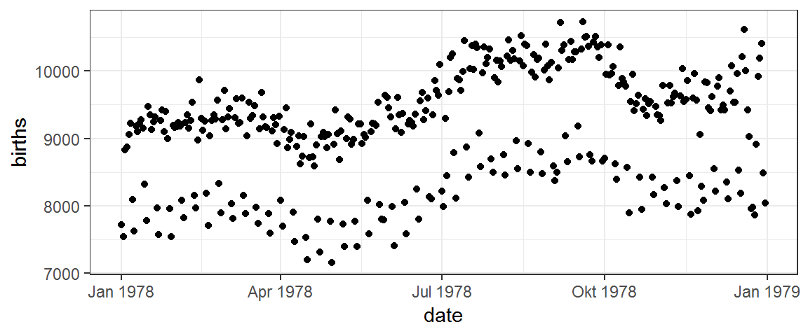

US Geburten 1978
Folgend findet sich eine interessante Graphik, welche die Lebendgeburten in den Vereinigten Staaten pro Tag im Jahr 1978 zeigt.

Welche Strukturen erkennen Sie in diesen Daten?
Welche möglichen Erklärungen könnte es für diese Strukturen geben?
Welche Erklärungen könnten Studenten geben, die nahelegen dass sie die Graphik fehlinterpretieren?
Wie wird die Graphik generiert?

Wir werden die Graphik nutzen,
um zu lernen wie mithilfe des
ggformulaPaketes Graphiken erstellt werden.um anzufangen allgemein über Design, Beschreibung und Interpretation von Graphiken nachzudenken.
Zwei wichtige Fragen
Um R (oder jede andere Software) dazu zu bewegen diesen Plot zu generieren (oder generell irgendetwas zu tun), gibt es 2 Fragen die Sie sich beantworten können müssen. Bevor Sie fortfahren überlegen Sie, ob Sie herausfinden können welche beiden Fragen wir im Sinn haben.
Die Fragen
Um R (oder jede andere Software) dazu zu bewegen diesen Plot zu generieren (oder generell irgendetwas zu tun), gibt es 2 Fragen die Sie sich beantworten können müssen:
1. Was soll der Computer für Sie tun?
2. Was muss der Computer dafür wissen?
Antworten auf die Fragen
Um die vorliegende Graphik zu erzeugen sind die Antworten wie folgt:
1. Was soll der Computer für Sie tun?
A. Erstelle ein Streudiagramm (z.B. eine Graphik bestehend aus Punkten)
2. Was muss der Computer dafür wissen?
A. Die zugehörigen Daten, aus denen die Grapik erzeugt wird:
- Die Variable, die auf der \(y\)-Achse abgetragen werden soll.
- Die Variable, die auf der \(x\)-Achse abgetragen werden soll.
- Der Datensatz, welcher die Variablen \(x\) und \(y\) enthält.
Wir müssen nur lernen wie wir R diese Informationen mitteilen.
Plotten mit Formeln (‘Formula’)
Das ‘Formula’ Template
Wir werden die Antworten auf unsere zwei Fragen durch das Ausfüllen der Boxen dieses wichtigen Templates liefern:
goal ( yyy ~ xxx , data = mydata )
Hierzu müssen wir lediglich identifizieren, welche Teile unserer Antworten in welche Box gehören.
“The Name of the Game”
Es ist hilfreich den Boxen Namen zu geben:
goal ( y ~ x , data = mydata , …)
Diese Namen können uns als Gedächtnisstütze dienen, welche Dinge wohin gehören. (Die ... deuten an, dass weitere Argumente existieren, von denen wir später noch ein paar ergänzen werden.)
Die zwei Fragen und das “Formula” Template
goal ( y ~ x , data = mydata )
F. Was soll R für Sie tun? A. Ziel
Dies bestimmt die Funktionen, die gebraucht werden.
Für eine Graphik beschreibt die Funktion welche Art von Zeichen genutzt werden (in unserem Beispiel: Punkte).
Andere Möglichkeiten umfassen Linien, Boxplots, etc.
F. Was muss R dafür wissen? A. Argumente
- Dies bestimmt die Eingaben in die Funktion.
- Für eine Graphik müssen wir die Variablen und den Datensatz, der sie enthält, identifizieren.
Die Puzzleteile zusammenfügen
Template
goal ( y ~ x , data = mydata )
Puzzleteile
| Box | Befüllen mit | Zweck |
|---|---|---|
goal
|
gf_point
|
Plotte einige Punkte |
y
|
births
|
y-Achsen Variable |
x
|
date
|
x-Achsen Variable |
mydata
|
Births1978
|
Name des Datensatzes |
Übung
Platzieren Sie jedes Teil an den entsprechenden Eintrag im Template und führen Sie den Code aus, um die Graphik zu erzeugen.
goal(y ~ x, data = mydata)Sollten Sie eine “object not found” oder “could not find function” Fehlermeldung bekommen, deutet dies darauf hin, dass Sie mind. eine der vier Boxen des Templates nicht korrekt ausgefüllt haben.
Beachte: R unterscheidet zwischen Groß- und Kleinschreibung, d.h. achten Sie auf die korrekte Schreibweise.
Für’s Protokoll: hier sind die ersten Zeilen von Births1978 ausgegeben.
Formeln
Das am meisten hervorstechende Merkmal von ggformula-Graphiken ist das Benutzen der Formeln zur Bestimmung der positionellen Information. Formeln in R beinhalten immer den Tilde Operator, was leicht zu übersehen ist. Er sieht wie folgt aus:

Die Position von  auf der Tastatur variiert je nach Marke. Auf Apple Tastaturen, ist es hier zu finden:
auf der Tastatur variiert je nach Marke. Auf Apple Tastaturen, ist es hier zu finden:

Übung
Finden Sie das Zeichen auf Ihrer Tastatur und schreiben Sie births ~ date im Code-Block. Das ist die Formel, die wir zur Erstellung unserer Graphik benötigen.
set_success_message("Good. That's all this exercise was about: typing a formula.")
t1 <- find_call("whatever ~ whatever", message = "do you have a tilde (~)? Does your formula have two sides?")
t2 <- find_call("births ~ date", message = "you need to have the y-axis variable on the left and the x-axis variable on the right")
USER_CODE %>% t1 %>% t2 Formeln zur Beschreibung von Graphiken nutzen
Die meisten gf_-Funktionen nutzen eine Formel zur Beschreibung der positionellen Attribute des Plots. Bei Aufrufen einer dieser Funktionen ohne Argumente wird die benötigte “Form” der Formel angezeigt.
Übung
Führen Sie folgenden Code aus, um die Form der Formel für gf_point() angezeigt zu bekommen.
gf_point()Es sollte Ihnen angezeigt werden, dass die Formel von gf_point() die Form y ~ x hat, d.h. die \(y\)-Variable wird vor der Tilde aufgeführt und die \(x\)-Variable dahinter. (Denke: “y hängt von x ab”. Beachten Sie auch, dass die \(y\)-Achsen Beschriftung weiter links auftaucht als die \(x\)-Achsen Beschriftung.)
Übung
Ändern Sie date zu day_of_year und sehen Sie sich an wie sich die Graphik ändert (wenn Sie dies in einer separaten Zeile machen, sehen Sie beide Graphiken auf einmal).
gf_point(births ~ date, data = Births1978)Zusatzübung (Optional)
Tauschen Sie die Rolle der Variablen – anstatt births ~ date geben Sie date ~ births an – und sehen Sie wie sich der Plot ändert.
Einen Gang hochschalten – verschiedene Arten von Graphiken
Unsere Graphiken haben Punkte, weil wir gf_point() genutzt haben. Es gibt jedoch noch viele andere gf_-Funktionen, die verschiedene Arten von Plots erstellen.
Übung
Experimentieren Sie mit anderen Plot-Arten durch Ersetzen von gf_point() durch eine der folgenden Funktionen:
gf_line(): Verbinden der Punktegf_lm(): Erstellen einer Regressionsgeraden (lm = linear model)gf_smooth(): Geglättete Version vongf_line()(LOESS oder lm)gf_spline(): Eine weitere Art zu glätten (mittels Splines)
Welche Art von Graphiken enthüllt Ausnahmefälle am besten? Was sind solche Ausnahmefälle?
gf_point(births ~ date, data = Births1978)Einstellen und Abbilden von Attributen
Die Geburtendaten von 1978 zeigen zwei deutliche “Wellen” von Punkten. Eine mögliche Vermutung wäre, dass dies jeweils Wochentage und Wochenenden sind. Wir können diese Vermutung testen, indem wir unterschiedliche Tage in verschiedenen Farben darstellen.
In der Sprache von ggformula müssen wir Farbe auf die Variable wday abbilden. Das Abbilden und Einstellen von Attributen unterscheidet sich auf eine wichtige Art:
color = "navy"stellt die Farbe auf “navy” ein. Alle Punkte werden in navy dargestellt.color = ~ wdaybildet Farbe aufwdayab. D.h. die Farbe ist abhängig vom Wert vonwday. Es wird automatisch eine Legende erstellt, die angibt, welche Farbe welchem Tag entspricht.
Übung
Ändern Sie das Farbargument, sodass es auf
wdayabgebildet wird. Vergessen Sie die Tilde nicht (~)!Probieren Sie andere Graphik-Arten aus:
gf_line(),gf_smooth()etc. Welche sagt Ihnen am meisten zu? Warum?
gf_point(births ~ date, data = Births1978, color = "navy")Welche Attribute sind verfügbar?
Sie können über die verfügbaren Attribute einer gegebenen Funktion mehr erfahren, indem Sie die Schnellhilfe aufrufen. Nähere Informationen erhalten Sie durch die Hilfeseite, welche mittels ? aufgerufen wird.
# "quick help" für gf_point()
gf_point()Welche Farbnamen gibt es?
Neugierig welche Farbnamen alle existieren? Dann führen Sie diesen Code aus:
colors()Facetten
Auf 20 Jahre von Daten schauen
Wenn wir auf die gesamten 20 Jahre der Geburtendaten schauen wollen (im Births-Datensatz), würde das Überlappen der Daten vermutlich zu viel Information auf zu wenig Raum darstellen und die Unterscheidung nach Jahren würde unmöglich werden (und auch das Entziffern von 20 Farben oder Formen könnte schwierig sein).
Stattdessen kann jedes Jahr auf einer eigenen Seite (“Facet”) oder in einer “Unter-Graphik” dargestellt werden. “Facets” sind besser geeignet als 20 separate Plots, weil sie ein gemeinsames Koordinatensystem teilen und somit Platz gespart und der Vergleich der verschiedenen Graphiken erleichtert wird.
Der einfachste Weg um “Facets” zu nutzen ist einen vertikalen Balken | zu unserer Formel hinzuzufügen, gefolgt von der “Facet”-Variable, in diesem Fall year.
gf_point(births ~ day_of_year | year, data = Births,
size = 0.5)Übung
Ändern Sie den obigen Plot um folgendes zu tun:
- Bilden Sie Farbe auf
wdayab. - Wechseln Sie von Punkten zu Linien, oder eine der Glättungen.
Was fällt Ihnen auf, wenn Sie auf die Geburtendaten der gesamten 20 Jahre schauen?
gf_point(births ~ day_of_year | year, data = Births,
size = 0.5)Facet Grids und Facet Wraps
Das “Faceting”, das wir auf der vorhergehenden Seite durchgeführt haben, wird “Facet Wrapping” genannt. Wenn die “Facets” nicht optimal in eine Zeile passen, werden sie in zusätzlichen Zeilen fortgesetzt.
Ein “Facet Grid” nutzt Zeilen oder Spalten, oder beides, in einem festen Verhältnis.
gf_point(births ~ day_of_year | year ~ wday, data = Births,
size = 0.5)“Facet Grids”" akzeptieren eine von drei möglichen Formeln
y ~ x(Facets entlang beider Achsen)~ x(Facets nur entlang der x-Achse)y ~ .(Facets nur entlang der y-Achse; Beachten Sie die notwendige Angabe des Punktes in dieser Formel)
Numerische Zusammenfassungen
Eine der Stärken des “Formula”-Templates ist, dass es noch für andere Aspekte zusätzlich zum Plotten genutzt werden kann. Es können z.B. numerische Zusammenfassungen über dieselbe Formel generiert werden.
Übung
Ändern Sie den Mittelwert “mean” zu einem der folgenden Kennzahlen: median, sd, max, min. Was passiert wenn Sie mean weglassen und nicht durch etwas anderes ersetzen?
df_stats(births ~ wday, data = Births1978, mean)Mehr Praxis
Zeit auf eigene Faust auf Erkundung zu gehen! Folgend ein paar Datensätze, die Sie dafür nutzen können:
Births1969bisBirths1988beinhalten Geburtendaten für einzelne Jahre.HELPrctumfasst Daten einer Studie zu Alkohol-, Kokain- sowie Heroinabhängigen.KidsFeetenthält Informationen über Kinderfüße.NHANESbeinhaltet unterschiedlichste physiologische Messungen und andere Merkmale von 10.000 amerikanischen Personen aus dem “National Health and Nutrition Evaluation Survey”.
Um mehr über die Datensätze zu erfahren, nutzen Sie ?HELPrct, ?KidsFeet oder ?NHANES. Um sich die ersten Zeilen des KidsFeet-Datensatzes ausgeben zu lassen, können Sie head(KidsFeet) eingeben.
Eine Auflistung der verfügbaren Funktionen in ggformula kann über den folgenden Code-Block aufgerufen werden.
# list all functions starting gf_
apropos("gf_")Übung
Erstellen Sie verschiedene Graphiken um einen oder mehrere der Datensätze zu erforschen.
- Experimentieren Sie mit unterschiedlichen Graphik-Arten.
- Nutzen Sie “Facets” zur Aufdeckung von Gruppierungen.
- Sie können mehr als einen Plot in einem Code-Block aufführen; wir haben hier zwei Blöcke angegeben, für den Fall dass Sie ihre Arbeit aufsplitten möchten. Nutzen Sie einen zum Experimentieren und kopieren Sie nach Belieben ihre favorisierten Analysen in den anderen Block.
gf_point(length ~ width, data = KidsFeet)
head(KidsFeet)
?KidsFeetWohin führt der Weg?
Wenn Sie mehr von Ihren Graphiken erwarten, fragen Sie sich vielleicht wie Sie mehr Kontrolle bekommen können über Aspekte wie:
- Farben, Formen und Größen für die einzelnen Darstellungen der Attribute.
- Beschriftungen, inkl. Titel und Achsenbeschriftungen.
- Schriftarten, Farben und Größe von Text.
- Farbe von Plot-Elementen wie Hintergrund, Gitterlinien, “Facet”-Beschriftungen etc.
Wie Sie sich vielleicht vorstellen können, können all diese Aspekte so ziemlich nach Ihren Wünschen angepasst werden. Das sparen wir uns allerdings für ein separates Tutorium zur indiviualisierung eines Plots auf.